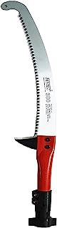
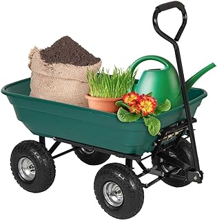
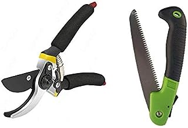

The agricultural tools are used to simplify the work of farmers
by reducing time and labour consumption in affordable cost there are
various tools that helps to develop agriculture and to make cultivation
simple.
these types of tools are used for weeding,planting,digging,seeding,ploughing
and other farm activities.It also provides a provicence of carrying farming
goods from one place to another in large scale either fo displacing or trading.
Farming tools are becoming game-changers in this era of quick technological
developments and growing standards for sustainable and effective farming, empowering
farmers and influencing the future of agriculture. With its diverse farming methods
and rich agricultural history, India has always been at the forefront of agricultural
innovation
For all kinds of primary and advanced purposes, the axe is used and employed for agricultural
operations.Axe is used for cutting purposes, this instrument is helpful in cutting the heavy
logs and other rigid substances. Moreover, the axe has a heavy head fixed on it with an edge
parallel to the handle.
The Axe is used to shape out, cut, harvest timber and split out the huge logs. The sharp edge of
the axe helps to easily cut the heavy and thick woods.
For produduct purchase Click Here
The rake is a crucial farming tool that is commonly utilized in agriculture for a variety of
functions.The long handle of this handheld device has a set of teeth or tines connected to
one end.Depending on the intended function and level of durability required, the tines may be
constructed of metal, wood, or plastic.
It is useful to gather, move, and level materials such as soil, leaves, grass, hay, or other
debris.It is particularly useful for tasks like preparing soil beds, clearing debris from fields,
spreading mulch,and maintaining the cleanliness of agricultural areas. Rakes come in different
sizes and designs,each suited for specific purposes.
Modern and large mechanized rakes are known as hay rakes and are made in various forms and origins.
Star-wheel rakes and rotary are the other kinds. The price of rakes is inexpensive and pocket-friendly.

For product purchaseClick Here
This agricultural tool is used for digging, lifting and removing the bulk materials such as soil,
coal,gravel and snow out of the rugged layer of the soil. It is the hand-held tool that has a
broad blade fixed to the end which sharply cuts down the soil and helps in the removal and cutting
of the substances that are present on the land layer.The blades of the shovel are made up of strong
steel and hard plastics that are robust and strong and makes the work easy for farming.
For product purchaseClick here
Also known as digging fork or spading fork it is widely used for the digging purpose, improving the
gardening land in a better way.The gardening tool consists of a handle and short or sturdy tines which
are used more for leveling the garden soil with its sharp teeth. This agricultural equipment helps in
loosening, lifting and turning the soil that is required for crop rotation or blending the nutrients into
the soil.
For product purchaseClick Here
To trim the trees and unwanted shrubs, a pruning saw is widely used. All varieties of Pruning saw are
available in different sizes and shapes, but all of them have a hard point and heat-treated teeth. The
pruning saw is one of the important tools to be used during farming as it is best suited for thick branches
and thick stems. With its help,farmers can shape the crop and get rid of unwanted growth in no time.

For product purchaseClick Here
These are the agricultural scissors which are used to cut small branches and samll plants leaving no edge and
dead plants along.Hedge shears cut the plants and wooden material almost to ½ inch of thickness. These shears
are used immensely for cleansing and managing the agricultural field. These are the most commonly used farm
tools that are made of wooden handles, grips and sharp blades.
For product purchaseClick Here
A wheelbarrow is a simple and adaptable hand-operated piece of equipment used for moving large or heavy objects.
It is constructed of a shallow or deep tray-like container or bucket-like container, frequently made of steel or
plastic,that is supported by a couple of handles at the rear and a single wheel at the front. The wheelbarrow is
designed to be tilted and pushed or pulled by a person/farmer, allowing for the easy movement of loads that would
otherwise be difficult to carry manually.

For product purchaseClick Here
It is also known as the mover, grasser or lawn mower that is supposed to clean the entire farmland. It is the most
efficient agricultural tool or vehicle that has one or more rolling blades to cut the grass surface to an even
length.If you want to see a beautiful and healthy farming land or agriculture space then having a land mover is a
must. The blades of the mover are mechanically connected to the wheels and are of two types one is pushing mover and
the other is electric grass mover.
For product purchaseClick Here
Seeder and fertilizers are the best equipment that is used to place the seeds into the soil for cultivation and
cropping.It also helps in the equal distribution of fertilizers and pesticides. This equipment carries a hopper
and tank that loads in all the pesticides and fertilizer to spread it over the agricultural area easily.
For product purchaseClick Here
This tool is handled with a strong handle and a long sharp steel blade. The Machete is easy to carry and can be
easily handled and commuted over the places. Thus, it has wide use cases. Because of its compact size, it fits
into the farming kits easily.The Machete is used for moving the grass, cutting or pruning the plants and removing
the stems or working through the brush.

For product purchaseClick Here
The tractor implements like rotavator, cultivator, the harrower, sprayer and seeder and many more such are most
common in demand and their availability. The tractor implements make sure that the farm operations are executed
with utmost accuracy and efficiency.We have also listed 13 implements on our site so that you can use these
implements with various tractor models. These tractor implements are available at affordable rates and have much
more utility than anything else.Farmers prefer having them for easing out the agricultural work. Check them out
today and make your way to improved farming.
For product purchaseClick Here
This agricultural tool is used majorly for the small farms or gardening purposes but sometimes even farmers use them
to irrigate the agricultural land. A watering can is useful for supplying the water all over the farms so that every
plant and agricultural being gets a proportionate amount of it. Watering can help in making the best utilization of
water with wasting it rather than supplying it to the necessary areas of the farms and fields.
For product purchaseClick Here
If you have cattle on your farm and chaff is one of the permanent solutions to feed them, Chaff Cutter would
be your perfect companion. Chaff Cutter is a mechanical tool that is generally used to cut the hay into small
pieces. These can then be used to feed cattle. The materials used to manufacture these machines are top-notch
and innovative.This machine has a more extended life expectancy.
For product purchaseClick Here
Maintaining healthy yard isn’t easy without having proper tools, Brush cutters are excellent tools for
eliminating unwanted grass. They make it much easier for users to maintain their land, they are powerful
machines that allow you to finish faster without having to go through the area again and again.
Brush cutters are versatile as they are available with various blade attachments, which allows the operator
to use it on different materials. This reduces the cost for the operator as he doesn’t need to buy different
tools for different landscaping jobs.
Brush cutter is a powerful machine which are built to power through the over grown bush, woods where other tools
like line trimmer can’t handle. As they are compatible with various blade attachments which allows the user to
operate in tight areas where large tools won’t fit.
For product purchaseClick Here
Post hole digger is used for digging holes for plantation and farm fencing purposes. It is very easy to
use and they can be used to a much greater depth, as the hole can be dug as deep as the entire length of
the shaft. Auger size can be decided as per the required hole size. The digging gets done at a faster rate
and neater way as compared to manual digging. It is best suited for orchards of Mango, Coconut, Pomegranate,
Teak, Lemon, Custard Apple and more.It is compatible with all types of soil.
For product purchaseClick Here
As the name shows, a Thermal fogger uses heat to vaporize a fogging liquid. In most cases, this liquid is
an insecticide or pesticide. It sprays the liquid out of the nozzle of the fogger in the form of a mist or
a fog.
Thermal foggers have a storage tank that can hold upto 10 L of liquid. This container, which holds insecticide
or other fogging liquids, is located on the bottom of most foggers.
The machine contains a pump used to send the fogging liquid from the container through the heat assembly, which
is located on the front of the fogger. The person operating the fogger initiates this pump by pressing the
fogging trigger. For most thermal foggers, this fogging trigger is under the handle of the tool.
For product purchaseClick Here
The power weeder is a new generation soil preparing machine suitable for all kinds of farms for the purpose of
deweeding,ploughing and ridge forming with unique user friendly features. It is an essential tool for every
Indian farmer, power weeder’s major applications include intercrop (Min 2 feet) deweeding in coconut farms,
cotton, sugarcane plantation,vegetables,horticulture etc.
uses
1. Weeding
2. Ridge forming – Straight and circular
3. Land Cultivation
4. Soil Levelling
5. Pump or sprayer using PTO
6. Dense Grass cutting - mower
For product purchaseClick Here